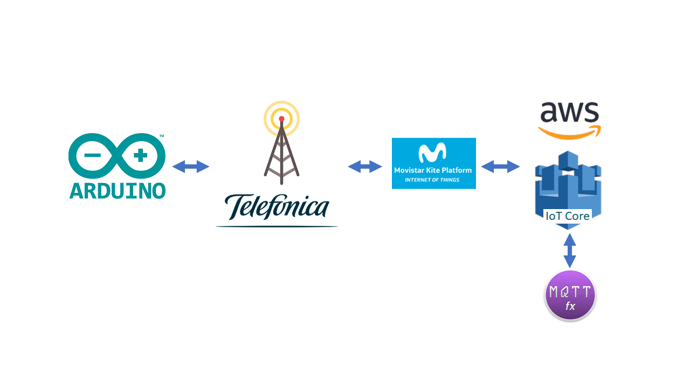
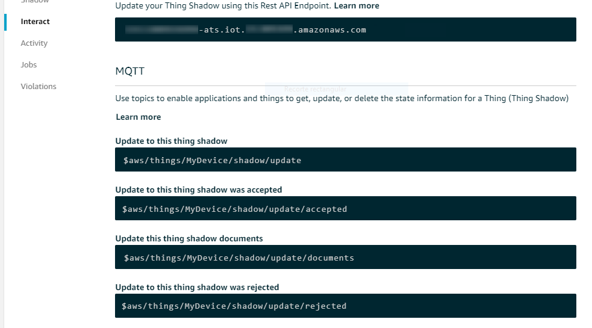
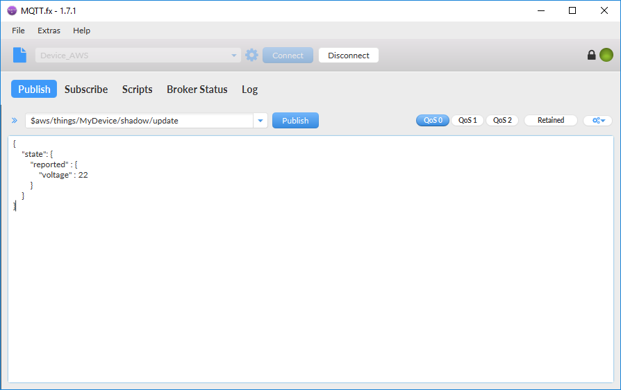

Table of Contents
Arduino: MKR NB-1500 to AWS-IoT
For this project, we will take different values from the Arduino board and publish them in AWS.

Getting started with the MKR NB-1500
What will you learn
- Control Arduino board MKR NB-1500 using the Arduino IDE
- Register a device on AWS
- Generate credentials for AWS
- Build a bridge between UDP and MQTT with Python
What will you need?
- Finish successfully the Arduino Starterkit tutorial
- Arduino board MKR NB-1500
- Micro USB cable
- Arduino IDE
- AWS account
- KITE Platform Certificates files
- Telefonica SIMs with private APN (IPsec)
- Telefonica data Bridge
If you have successfully completed the Arduino Starterkit tutorial, all the necessary software is already updated.

What is MQTT
MQTT is a machine-to-machine (M2M)/”Internet of Things” connectivity protocol. It was designed as an extremely lightweight publish/subscribe messaging transport.
The first concept is the publish and subscribe system. A device can publish a message on a topic, or it can be subscribed to a topic to receive messages
AWS use this system to communicate with your devices
If you access to AWS Management Console.In the left navigation panel, choose Manage, and then choose Things. When choose a thing you can find out the different topic that you can subscribe/publish Select **Interact to copy they

At the moment, you only need to know three topics:
- Update to this thing shadow
$aws/things/MyDevice/shadow/update - Update to this thing shadow was accepted
$aws/things/MyDevice/shadow/update/accepted - Update to this thing shadow was rejected
$aws/things/MyDevice/shadow/update/rejected

Test your Certificates with MQTT.fx
One of the best ways to make sure that certificates have been created correctly is to try connecting via a MQTT client with graphical interface.
We recommend you download MQTT.fx from the following link https://mqttfx.jensd.de/
- Open MQTT.fx and create a new connection.

- Configure the broker as shown in the image below. Remember to use the files you downloaded in the previous step. And configure the broker address associated to your device.

- Now that you are connected to the broker, you need to subscribe to the topics to know the state of the shadow: accepted and rejected.
Every time a message is published in the topic to update the shadow, you can check in these topics if the message has been accepted or rejected.
$aws/things/MyDevice/shadow/update/accepted
$aws/things/MyDevice/shadow/update/rejected

- To update your device’s shadow, You should publish in the topic the following json file, you can use the following link to validate it https://jsonlint.com/
{
"state": {
"reported" : {
"voltage" : 22
}
}
}
This file will simulate the publishing of a device to make voltage measurements.

- Choose the topic to update your shadow.
Be sure to select the service quality level as QoS 0, amazon doesn’t allow a different police.
$aws/things/MyDevice/shadow/update

- If you want to delete the shadow’s document publish the next json file
{ "state": null } - Play with this, sending different values until you understand how it works. :thumbsup: Remember to check if your values has been accepted or rejected

How to comunicate with AWS
As you know, when you register a new device in AWS, several topics are created by default. Using them you can send data and receive information.
For the time being, you only need to know a couple of them:
topic Update
$aws/things/MyDevice/shadow/update
this topic is where you publish the status of the device, in this tutorial this information is composed by the values of the sensors as the current color of the LED display.
topic Delta
$aws/things/MyDevice/shadow/update/delta
This is the channel that AWS uses to communicate the desired changes to the device. In this case we use the MQTT.fx to communicate these changes to AWS and to report the change to the device.
All these changes are recorded in the shadow of the device. To see the current status just access the AWS core as you saw in the previous section.
{
"desired": {
"raw": "2"
},
"reported": {
"raw": "{\"v\":34,\"a\":24}"
},
"delta": {
"raw": "2"
}
}
As you notice in the previous file, there are three main keys:
- “desired”: Contains the desired state, sent from the MQTT.fx
- “reported”: Contains the status information reported by the device
- “delta”: contains the differences between the reported status and the desired status. This is the information that is published in the delta topic

How to Start with the project
We will explain it to you later in detail how to play with it step by step, In this tutorial you need to be familiar with the following concepts
- Run a code file on your Arduino Board
- Run a python server with the credentials manager
- Upload the credentials files to a Server
- Use MQTT.fx to post messages in a topic
- Get the shadow from AWS core
Now you can connect to the internet and send your data through the UDP protocol.

Arduino Board: Run a code file
For this Arduino project, it is necessary that you include some of the classes we have prepared exclusively for this tutorial. To do this, be sure to open the .ino file from the following folder. There are all the files you need.
In the following code you can see the main structure of the program:
- Measuring
- Modem connection to the network
- Sending of the measures
- Disconnection of the modem to reduce power consumption
- Sampling timeout ```c }
void loop() { // put your main code here, to run repeatedly:
Serial.println(“measuring…”); data.measurement(); Serial.print(“- voltage: “); Serial.println(data.get_voltage()); Serial.print(“- amperage: “); Serial.println(data.get_amperage());
Serial.println(“Sending… “);
nbAccess.noLowPowerMode();
send_data_UDP(data.get_voltage(),data.get_amperage());
nbAccess.lowPowerMode();
delay(polling); }
But first of all, don't forget to complete the configuration [file](../scripts/Arduino/Connection_UDP/configuration.h)
In the you have to complete the necessary information to complete the sending of information to the UDP server.
```c
// COMPLETE your information
#define SECRET_PINNUMBER ""
#define LOCAL_PORT 4114
#define IP_ADDRESS "XX.XX.XX.XX"
// SET your sampling time
#define POLL_TIME 10

UDP data Bridge: Connecting using NB-IoT o LTE-M
One of the advantages of an iot device, is to be able to stop the connection when it is not necessary to decrease the energy consumption.
From iot-activation we suggest you the deployment of a data bridge between the Arduino and the AWS IoT Core.
This allows you to increase the intelligence of your devices by integrating the Kite Platform into this server, and this add extra security in sending data over the network. By updating your Kite SIM information, the data bridge recognizes the SIM and automatically connects to the corresponding AWS MQTT broker.
Just make sure to add the name of the thing as one of the fields of the SIM in Kite. Kite
This bridge is the easiest way to connect to AWS using only one UDP send
:heavy_exclamation_mark: If you’re running the connection tests in The Thinx lab. The SIM you use will not have connectivity with the Kite platform. So you will not be able to use the connection through our Bridge. Even so you have access to the internet and you will be able to perform any test on your infrastructure.
logger.info("################################# waiting for a new message #################################")
udp_msg, udp_ip = sock.recvfrom(1024)
ip = udp_ip[0]
logger.info("Message Received [ %s ] from [ %s ] : [ %s ]" % (udp_msg, udp_ip[0],udp_ip[1] ))
response = bridge_routine(udp_msg, udp_ip[0], config_cloud)
logger.debug("Generate ACK payload [ %s ]" % response)
ack_msg = json.dumps(response)
logger.info("Sent MESSAGE [ %s ] to [ %s ] : [ %s ]" % (ack_msg, udp_ip[0], udp_ip[1]))
sock.sendto(ack_msg, udp_ip)

Check the Shadow
Before starting the execution you will see how your shadow is empty. With this script you can send voltage and current values This updated the shadow with each shipment of the device every few seconds.

Send a command
To send a command to the device you must use the MQTT as explained in the previous section through the json that we provide. You can change this instruction as many times as needed.
In this example you can turn off and endend the small LED on the board, but you are free to program your own instructions. Feel free!
# Turn on led
{
"state": {
"desired": {
"raw": 1
}
}
}
# Turn off led
{
"state": {
"desired": {
"raw": 2
}